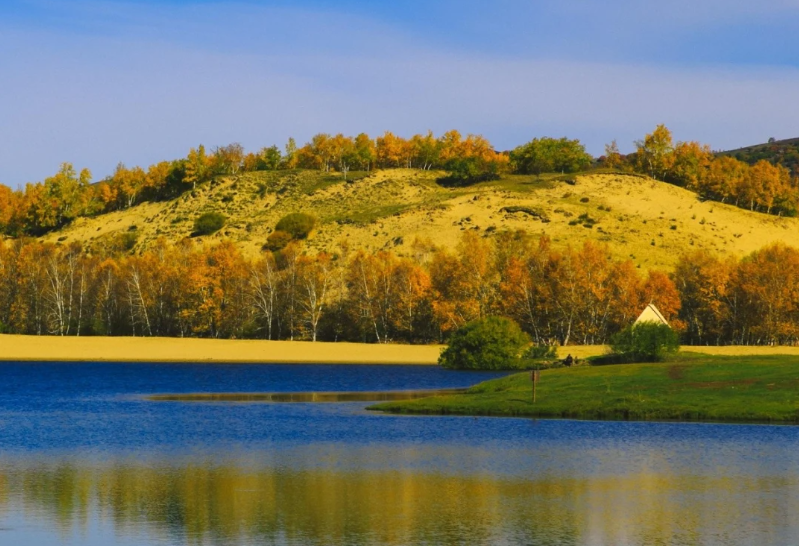
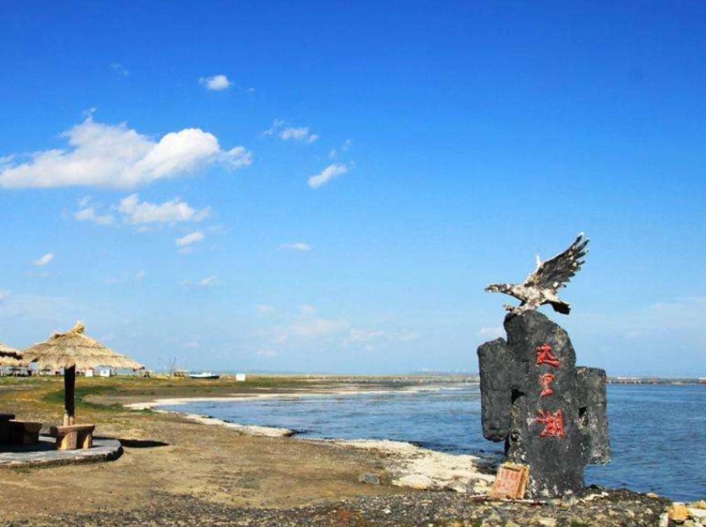

赤峰文旅

乌兰布统草原——夏日的绿色海洋
七月的乌兰布统，草长莺飞，一望无际的绿色草原让人心旷神怡。骑马驰骋在草原上，感受风从耳边呼啸而过，傍晚的篝火晚会更是让人流连忘返……
探秘阿斯哈图石林——亿年地质奇观
阿斯哈图石林是世界地质公园，形态各异的花岗岩石林矗立在山脊之上，宛如一座天然的雕塑博物馆。清晨的石林在薄雾中更显神秘……

达里诺尔湖——草原上的明珠
达里诺尔湖是内蒙古四大内陆湖之一，湖水湛蓝如海。每年春秋两季，成千上万的天鹅在此栖息，构成一幅绝美的生态画卷……